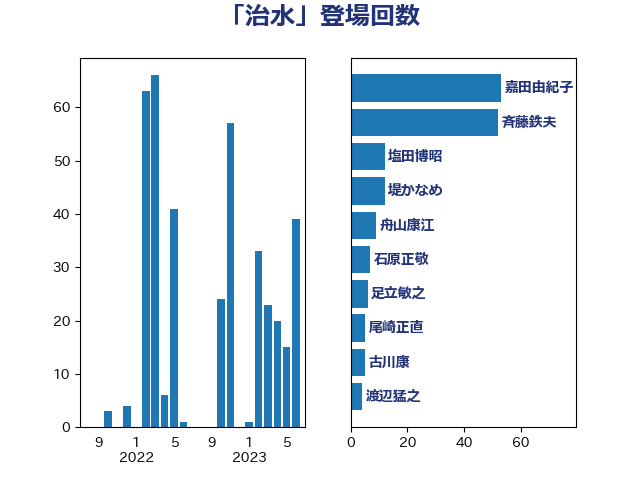

単語「治水」

| 赤羽一嘉 | 公明党 | 122 回 |
| 小宮山泰子 | 立憲民主党 | 48 回 |
| 足立敏之 | 自由民主党 | 33 回 |
| 嘉田由紀子 | 無所属 | 30 回 |
| 杉久武 | 公明党 | 27 回 |
| 高橋千鶴子 | 日本共産党 | 26 回 |
| 熊谷裕人 | 立憲民主党 | 24 回 |
| 浜口誠 | 国民民主党 | 18 回 |
| 野中厚 | 自由民主党 | 18 回 |
| 塩田博昭 | 公明党 | 17 回 |
| 斉藤鉄夫 | 公明党 | 17 回 |
| 馬場成志 | 自由民主党 | 17 回 |
| 古川元久 | 国民民主党 | 12 回 |
| 堤かなめ | 立憲民主党 | 12 回 |
| 簗和生 | 自由民主党 | 12 回 |
| 青木愛 | 立憲民主党 | 12 回 |
| 宮崎雅夫 | 自由民主党 | 11 回 |
| 舟山康江 | 国民民主党 | 11 回 |
| 吉田宣弘 | 公明党 | 9 回 |
| 室井邦彦 | 日本維新の会 | 9 回 |
| 朝日健太郎 | 自由民主党 | 9 回 |
| 穀田恵二 | 日本共産党 | 9 回 |
| 田中英之 | 自由民主党 | 8 回 |
| 井上英孝 | 日本維新の会 | 7 回 |
| 塩村あやか | 立憲民主党 | 7 回 |
| 野上浩太郎 | 自由民主党 | 7 回 |
| 浅野哲 | 国民民主党 | 6 回 |
| 尾崎正直 | 自由民主党 | 5 回 |
| 山口那津男 | 公明党 | 4 回 |
| 岡本三成 | 公明党 | 4 回 |
| 渡辺猛之 | 自由民主党 | 4 回 |
| 西岡秀子 | 国民民主党 | 4 回 |
| 大野泰正 | 自由民主党 | 3 回 |
| 宮内秀樹 | 自由民主党 | 3 回 |
| 清水真人 | 自由民主党 | 3 回 |
| 石井啓一 | 公明党 | 3 回 |
| 石川博崇 | 公明党 | 3 回 |
| 三浦信祐 | 公明党 | 2 回 |
| 中川宏昌 | 公明党 | 2 回 |
| 中西祐介 | 自由民主党 | 2 回 |
| 中野英幸 | 自由民主党 | 2 回 |
| 塩川鉄也 | 日本共産党 | 2 回 |
| 大口善徳 | 公明党 | 2 回 |
| 大野敬太郎 | 自由民主党 | 2 回 |
| 安達澄 | 無所属 | 2 回 |
| 山崎誠 | 立憲民主党 | 2 回 |
| 岸田文雄 | 自由民主党 | 2 回 |
| 平口洋 | 自由民主党 | 2 回 |
| 森山浩行 | 立憲民主党 | 2 回 |
| 横沢高徳 | 立憲民主党 | 2 回 |
| 浜地雅一 | 公明党 | 2 回 |
| 福田昭夫 | 立憲民主党 | 2 回 |
| 竹内譲 | 公明党 | 2 回 |
| 赤澤亮正 | 自由民主党 | 2 回 |
| 足立康史 | 日本維新の会 | 2 回 |
| 進藤金日子 | 自由民主党 | 2 回 |
| 鈴木敦 | 国民民主党 | 2 回 |
| あかま二郎 | 自由民主党 | 1 回 |
| 上田英俊 | 自由民主党 | 1 回 |
| 五十嵐清 | 自由民主党 | 1 回 |
| 北神圭朗 | 無所属 | 1 回 |
| 堀井巌 | 自由民主党 | 1 回 |
| 大西英男 | 自由民主党 | 1 回 |
| 安江伸夫 | 公明党 | 1 回 |
| 小沼巧 | 立憲民主党 | 1 回 |
| 小泉進次郎 | 自由民主党 | 1 回 |
| 川崎ひでと | 自由民主党 | 1 回 |
| 平沼正二郎 | 自由民主党 | 1 回 |
| 斎藤アレックス | 国民民主党 | 1 回 |
| 東徹 | 日本維新の会 | 1 回 |
| 櫻井周 | 立憲民主党 | 1 回 |
| 田中健 | 国民民主党 | 1 回 |
| 田村貴昭 | 日本共産党 | 1 回 |
| 竹内真二 | 公明党 | 1 回 |
| 西田実仁 | 公明党 | 1 回 |
| 酒井庸行 | 自由民主党 | 1 回 |
| 阿部知子 | 立憲民主党 | 1 回 |
| 須藤元気 | 無所属 | 1 回 |